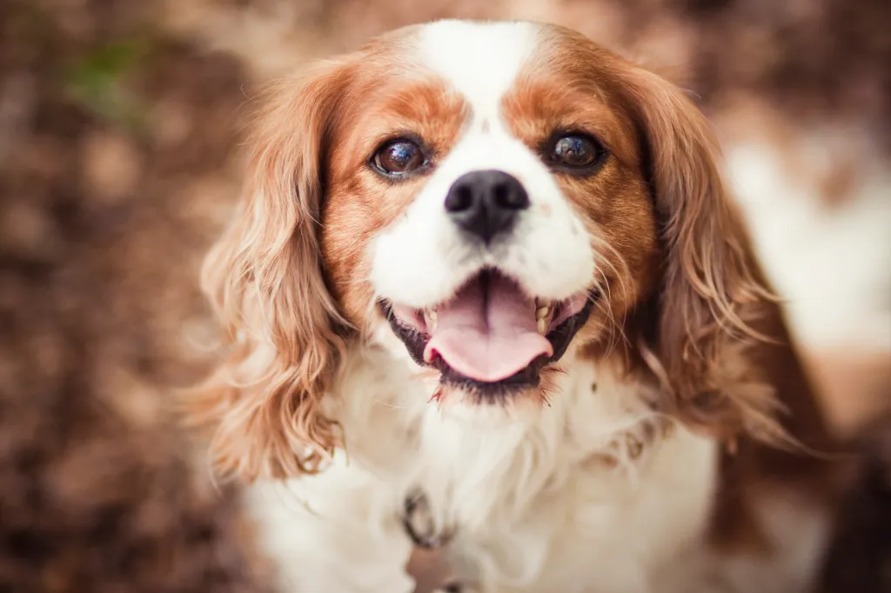

Cavalier King Charles Spaniels
Les Cavalier King Charles Spaniels, petites boules de peluche à la personnalité enjouée, charment les cœurs avec leur élégance et leur nature affectueuse. Dotés de grands yeux expressifs et d'oreilles frémissantes, ces adorables compagnons sont une incarnation de la grâce et de la gentillesse canine.
Originaire de la noblesse britannique, le Cavalier King Charles Spaniel a été choyé comme un compagnon de choix des rois et des reines. Aujourd'hui, ils continuent d'apporter une touche royale à nos vies, bien que leur véritable trésor réside dans leur nature aimante et leur désir constant de plaire.
Ces petits chiens, dotés d'une énergie modérée et d'un tempérament équilibré, se révèlent être d'excellents compagnons pour les familles, les personnes seules ou les personnes âgées. Leur taille compacte les rend adaptés à la vie en appartement, tandis que leur amour inconditionnel les transforme en amis fidèles.
Que ce soit à l'affût de papillons au parc ou en train de se pelotonner tendrement sur le canapé, les Cavalier King Charles Spaniels apportent une joie constante à ceux qui ont la chance de les avoir comme compagnons. Leur douceur, leur sociabilité et leur élégance en font une race de chien qui laisse une empreinte indélébile dans le cœur de tous ceux qui croisent leur chemin.
 Mastiff
Mastiff